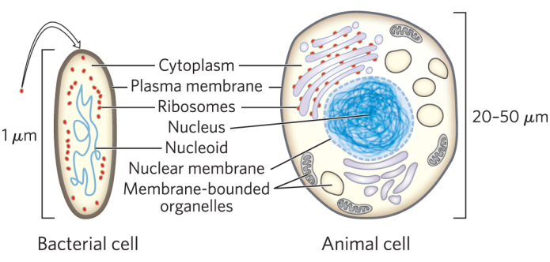
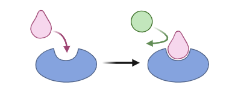
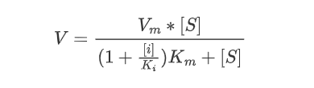
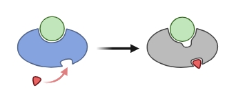
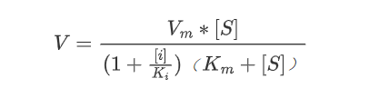
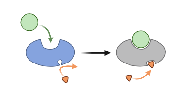
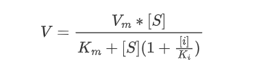
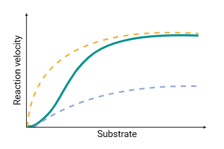
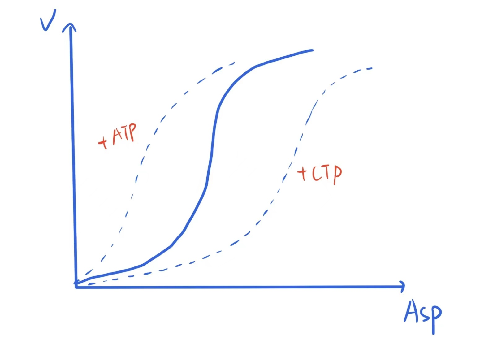

8.1.Compartmentalization of Enzyme

Biological organisms are divided into two major categories: prokaryotes and eukaryotes. Prokaryotic cells do not have a membrane-bound nucleus and organelles, and they have a relatively simple structure with ribosomes and naked double-stranded circular DNA (nucleoid). They exist as single-celled organisms, such as bacteria. On the other hand, eukaryotic cells have a membrane-bound nucleus and various organelles. Different biochemical reactions take place in different organelles, where different enzymes are distributed. This mechanism is called enzyme compartmentalization, and the different compartments are separated by the cellular membrane system. The table below lists the distribution of some important enzymes/biochemical reactions within the cell:
| Subcellular Compartment | Enzyme/Biochemical Reaction |
|---|---|
| Cell Membrane | ATP synthase, adenylate cyclase |
| Nucleus | DNA polymerase, RNA polymerase |
| Cytoplasm | Glycolysis, pentose phosphate pathway, glycogen metabolism, fatty acid synthesis, aminoacyl-tRNA synthetase |
| Mitochondria | Electron transport chain, oxidative phosphorylation, TCA cycle, fatty acid β-oxidation |
| Chloroplast | Photosynthetic phosphorylation |
| Endoplasmic Reticulum | Protein synthesis complex, fatty acid desaturase |
| Lysosome | Various hydrolases |
The compartmentalization of enzymes has the following significance:
- Metabolic pathways in different compartments proceed in an orderly manner without interference, creating favorable conditions for metabolic regulation. This allows certain regulatory factors to act specifically on enzymes in specific compartments.
- Through complex transport and signal transduction mechanisms, the compartments are interconnected, making the cell a unified metabolic system.
- It facilitates the rapid accumulation of enzymes and substrates in the corresponding compartments, ensuring normal metabolic processes.
8.2.Regulation of Enzyme Activity
Based on the mode of action, enzymes in metabolic pathways can be classified into two types: static enzymes, which catalyze reactions rapidly and reversibly without regulating the metabolic rate, and regulatory enzymes, which are subject to one or several regulatory mechanisms. In addition to the catalytic sites responsible for enzyme activity, regulatory enzymes also have regulatory sites, where binding of regulatory factors can alter their catalytic capacity. These enzymes often act at the beginning or branch points of pathways, catalyze irreversible reactions, and have limited rate-determining effects on the entire pathway. Enzyme activity regulation is a fast-acting way to regulate metabolic rate by directly changing the activity of enzymes.
8.2.1.Activators
Enzyme activators are substances that enhance the activity of enzymes. When separated from the enzyme, the activity of the enzyme decreases, but it does not become inactive.
(Ⅰ) Inorganic Ions
Inorganic ions have two types of effects on enzymes. One type is as cofactors(details in 7. How Enzymes Work) The other type is as activators, such as certain metal ions: Ca2+ acts as an activator for α-amylase, Mg2+ is an activator for many kinases, Zn2+ is an activator for carboxypeptidase and alcohol dehydrogenase, and Mn2+ is an activator for pyruvate carboxylase. Cl- serves as an activator for salivary amylase, and heavy metal ions can also cause enzyme denaturation. Inorganic ions acting as enzyme activators exhibit substitutability (e.g., Mg2+ and Mn2+ can usually substitute for each other), antagonism (Na+ can inhibit the activation effect of K+), and specificity.
(Ⅱ) Organic Molecules
High concentrations of Cys and GSH act as antioxidants, ensuring the reduced state of -SH in thiolase and increasing its activity. EDTA chelates with heavy metal ions, eliminating their inhibitory effects on enzyme activity.
8.2.2.Inhibitors
Enzyme inhibitors are substances that modify essential groups and cause the loss of enzyme activity without denaturation. Depending on their mechanism of action, inhibitors can be classified into irreversible and reversible inhibitors.
(Ⅰ) Irreversible Inhibition
Irreversible inhibitors tightly bind to enzyme molecules through covalent bonds and cannot be removed by physical methods. Based on their specificity, irreversible inhibitors can be classified into nonspecific and specific inhibitors.
Examples of common nonspecific inhibitors:
Organophosphorus compounds (pesticides, insecticides) phosphorylate the -OH group on the Ser residue in acetylcholinesterase, leading to enzyme inactivation and preventing the breakdown of acetylcholine, resulting in continuous neural excitation and potentially death. Detoxification can be achieved through dephosphorylation using pralidoxime and physiological antagonism using atropine.
Organomercury and organoarsenic compounds (Lewisite, arsenic) destroy the -SH group in thiolase, inhibiting enzyme activity. Detoxification can be achieved using reducing agents such as GSH and high concentrations of Cys.
Heavy metal ions (Ag+, Pb2+, Hg2+) disrupt the -SH group in thiolase, inhibiting enzyme activity. Detoxification can be achieved by adding EDTA.
Alkylating agents (iodoacetic acid, iodoacetamide, p-chloromercuribenzoic acid) alkylate the -SH group in thiolase, inhibiting its activity.
CO, azides, cyanides, and sulfides chelate with the Fe2+ in heme prosthetic groups in cytochrome oxidase, inhibiting its activity and blocking electron transfer in the respiratory chain.
Examples of common specific inhibitors:
- Affinity-based inhibitors(Ks) refers to a type of inhibitor that is structurally similar to a natural substrate of an enzyme. After binding with the enzyme, the active groups in the molecule react with specific essential groups of the enzyme, leading to enzyme inactivation. For example, TLCK inhibits the activity of trypsin and TPCK inhibits the activity of chymotrypsin.
- Suicide substrates with (Kcat) refers to a type of inhibitor that is a natural substrate of the enzyme itself. After binding with the enzyme, the active group is exposed and reacts with the enzyme to cause enzyme inactivation. For example, N,N-dimethylpropargylamine inhibits the activity of monoamine oxidase and allopurinol inhibits the activity of xanthine oxidase.
(Ⅱ) Reversible inhibition
Reversible inhibitors refer to a type of inhibitor that binds with enzyme molecules through non-covalent bonds and can be removed by physical methods such as dialysis and ultrafiltration. Reversible inhibition can be divided into three categories:
Competitive inhibition refers to an inhibitor that is structurally similar to the substrate and can competitively bind to the active center of the enzyme molecule (or indirectly bind to the active center, but will cause a conformational change of the active center after binding), preventing the substrate from binding to the enzyme molecule and thus inhibiting enzyme activity. This inhibitory effect can be weakened by increasing the substrate concentration. The characteristic of this inhibition is an increase in Km and no change in Vmax.
| Illustration | Equation |
|---|---|
|  |  |
Examples of competitive inhibition:
Sulfonamide drugs are structurally similar to p-aminobenzoic acid and can competitively inhibit the activity of dihydrofolate synthase, thereby inhibiting FH4 synthesis and disrupting bacterial nucleic acid synthesis, leading to bactericidal effects. Humans can use exogenous folic acid, so they are not affected.
Isoniazid is a structural analog of nicotinamide and can competitively inhibit the enzyme involved in the synthesis of mycolic acid in the cell wall of Mycobacterium tuberculosis, thus treating tuberculosis.
Succinic acid and adipic acid are structural analogs of succinic acid and inhibit succinate dehydrogenase activity.
Aminopterin is a structural analog of folate and inhibits the synthesis of FH4.
5-Fluorouracil is a structural analog of uracil (or thymine) and, after being metabolized into 5-fluorodeoxyuridine monophosphate, inhibits the activity of thymidylate synthase.
Zidovudine is a structural analog of deoxythymidine and, when bound to HIV reverse transcriptase, becomes incorporated into the DNA chain being synthesized, thereby treating HIV by disrupting DNA synthesis.
Non-competitive inhibitors refer to inhibitors that are structurally different from the substrate and do not have competitive effects. They can bind to the enzyme molecule at the same time, but the resulting ESI ternary complex cannot decompose to produce products. This effect cannot be weakened by increasing the substrate concentration. The characteristic of this inhibition is no change in Km and a decrease in Vmax, such as the inhibition of enzymes by heavy metal ions.
| Illustration | Equation |
|---|---|
|  |  |
Uncompetitive inhibitors can only bind to the enzyme molecule after the enzyme and substrate bind to form the ESI ternary complex. This complex cannot decompose to produce products. The characteristic of this inhibition is a decrease in both Km and Vmax.
| Illustration | Equation |
|---|---|
|  |  |
8.2.3.Covalent Modification
Covalent modification refers to the reversible covalent binding between some essential groups of enzyme molecules and certain chemical groups, causing the enzyme to transition between active and inactive states and changing the way the enzyme is regulated. Often, enzymes need specific covalent modifications before they can become active. The main types of reversible covalent modifications in cells are methylation, acetylation, phosphorylation, glycosylation, adenylation, and guanylation, among which phosphorylation is the most common. Under the action of protein kinases, phosphate groups in ATP are transferred to certain amino acid residues (such as Ser and Thr) in downstream enzyme molecules, which can be removed by phosphoprotein phosphatases. Key enzymes in decomposition metabolism tend to be inhibited by phosphorylation, while those in synthetic metabolism tend to be activated. The interconversion between phosphorylation and dephosphorylation satisfies the metabolic requirements of the organism under different conditions.

Covalent modification has the following characteristics: it only changes some covalent bonds in the peptide chain's primary structure and does not involve changes in spatial structure; it requires the consumption of ATP; in animals, covalent modification exhibits a cascade amplification reaction. When a small amount of effector molecule interacts with the receptor, it can activate or inactivate a large number of downstream enzymes. Therefore, covalent modification is more efficient than allosteric regulation.
8.2.4.Allosteric regulation
Allosteric regulation refers to the reversible non-covalent binding of enzyme regulatory sites with allosteric effectors, inducing a conformational change in the enzyme and altering the enzyme regulation mode. Compared with covalent modification, allosteric effect causes a change in the spatial conformation of the allosteric enzyme, while the covalent structure remains the same. The process does not consume ATP, and there is no cascade amplification effect. Therefore, allosteric regulation is less efficient than covalent modification. According to the mechanism, the allosteric effect of enzymes can be divided into positive cooperativity and negative cooperativity:

Positive cooperativity refers to the non-covalent reversible binding of the regulatory site of an enzyme with a substrate or effector, inducing an allosteric effect that enhances the affinity of the enzyme active site for the substrate and increases the catalytic activity of the enzyme. Compared with Michaelis-Menten enzymes, the kinetic curve of an allosteric enzyme with positive cooperativity is S-shaped. A typical enzyme with positive cooperativity is aspartate transcarbamoylase (ATCase), which consists of two catalytic trimers and three regulatory dimers. Its substrates-Asp, ATP, and CTP, can all act as allosteric effectors:
- Asp: This enzyme catalyzes the reaction between Asp and carbamoyl phosphate to form N-carbamoylaspartate. Asp is both a substrate and a positive effector. When the concentration of Asp is high enough to induce an allosteric effect, the affinity of the enzyme's catalytic subunits for Asp is greatly increased, and the catalytic efficiency increases.
- ATP: Since this pathway is related to pyrimidine synthesis, when the concentration of ATP is high, the rate of DNA biosynthesis increases. Therefore, ATP acts as an allosteric activator, enhancing the affinity of the enzyme's catalytic subunits for aspartate and increasing the catalytic efficiency. The kinetic curve shifts to the left, but Vmax is not affected.
- CTP: Since the end product of the pathway is CTP, when the concentration of CTP is high, feedback inhibition occurs, weakening the affinity of the enzyme's catalytic subunits for aspartate. The kinetic curve shifts to the right, but Vmax is not affected.

Negative cooperativity refers to the covalent reversible binding of the regulatory site of an enzyme with a substrate or effector, inducing an allosteric effect that reduces the affinity of the enzyme active site for the substrate and decreases the catalytic activity of the enzyme. Compared with enzymes with positive cooperativity, the kinetic curve of an enzyme with negative cooperativity is approximately hyperbolic. A typical enzyme with negative cooperativity is glyceraldehyde 3-phosphate dehydrogenase. This enzyme is a thiol enzyme and can be inhibited by alkylation agents such as iodoacetic acid. It contains four subunits. This enzyme catalyzes the dehydrogenation of glyceraldehyde 3-phosphate, and the [H] removed is carried by NAD+, which is both a substrate and a negative effector. When the concentration of NAD+ is low, the enzyme has a high affinity for NAD+, and the catalytic efficiency increases rapidly, ensuring normal EMP when NAD+ is insufficient. When the concentration of NAD+ is too high, inhibition occurs through negative cooperativity, reducing the affinity of the enzyme's catalytic subunits for NAD+, thereby weakening the catalytic efficiency of the enzyme to prevent the accumulation of intermediates and energy.
The allosteric effects have the following significance:
- Preventing excessive accumulation of end products: In the fatty acid synthesis pathway, when there is excessive synthesis of long-chain fatty acids, feedback inhibition occurs on the enzyme acetyl-CoA carboxylase, preventing further accumulation of end products.
- Preventing waste due to excessive metabolic capacity: When the organism has a high energy level, which means high ATP concentration, energy charge regulation is triggered. ATP acts as an allosteric inhibitor for certain key enzymes involved in catabolic metabolism, reducing catabolic metabolism and energy production to prevent excess waste.
- Coupling of pathways through allosteric effects: In glycolysis and gluconeogenesis, when glycolysis are inhibited, gluconeogenesis is activated, and vice versa. This allows for the interconnectedness of metabolic pathways within the cell.
- Enhancing enzyme/protein catalytic efficiency: For enzymes that exhibit positive cooperativity, the substrate often acts as an allosteric effector. For example, according to ATCase, the substrate Asp can induce positive cooperativity, increasing the affinity of the enzyme's catalytic subunits for Asp and enhancing catalytic efficiency. The substrate O2 for hemoglobin also acts as a positive allosteric effector, enhancing the affinity of other subunits for O2 and improving oxygen binding or release efficiency.
8.2.5.Proenzyme Activation
Proenzyme refers to the inactive precursor form of an enzyme produced by cells. It becomes an active enzyme after specific proteolytic cleavage of peptide chains that are unrelated to activity, leading to the formation or exposure of the active site. Enzyme activation is the process of converting an inactive proenzyme into an active enzyme and is essentially a type of irreversible covalent modification. The activation processes of digestive enzymes and clotting enzymes shown in the example diagram are typical examples of enzyme activation in the human body. Generally, these digestive enzymes exist in the form of proenzymes in the body, ensuring that their own cells are not digested and destroyed by the enzymes. They are only activated after food enters the digestive tract.
8.2.6.Isoenzyme Regulation
Isoenzyme refers to a class of enzymes that catalyze the same reaction but have different physical and molecular properties. Different types of isoenzymes, although catalyzing the same reaction, have different affinities for substrates and reaction directions. By regulating the activity and ratio of various isoenzymes at metabolic branch points, the metabolism pathway can be altered to adapt to different metabolic environments in the organism. Sometimes, changes or deficiencies in isoenzyme activity may be associated with certain diseases.
- Lactate dehydrogenase (LDH) catalyzes the conversion between lactate and pyruvate and is one of the earliest discovered isoenzymes. There are at least five different isoenzymes of LDH in vertebrate tissues. All isoenzymes contain four subunits, and different types of isoenzymes contain different proportions of two subunits. The H is the heart type subunit, and the M is the muscle type subunit. In skeletal muscle, the predominant isoenzyme contains four M subunits (LDH5), which tends to convert pyruvate to lactate. In the heart, the predominant isoenzyme contains four H subunits (LDH1), which tends to convert lactate to pyruvate. Other tissues may also have other types of isoenzymes.

| Type | Composition | Location |
|---|---|---|
| LDH1 | HHHH | Heart and erythrocyte |
| LDH2 | HHHM | Heart and erythrocyte |
| LDH3 | HHMM | Brain and kidney |
| LDH4 | HMMM | Skeletal muscle and liver |
| LDH5 | MMMM | Skeletal muscle and liver |
8.3.Regulation of Enzyme Synthesis
Regulation of enzyme synthesis refers to the regulation of enzyme synthesis and degradation. By regulating the expression of genes at the transcription level, the synthesis of enzymes can be changed, thereby regulating the metabolic rate. If a new enzyme appears in an organism, it may be because the gene encoding that enzyme has switched from a closed state to an open state. If existing enzymes gradually disappear, it may be because the gene expression of those enzymes has stopped. If the gene for an enzyme is constantly expressed but the concentration of enzyme gradually decreases, it may be due to the degradation rate of the enzyme being much higher than the synthesis rate, or the process of enzyme activation being blocked, or the lack of cofactors, resulting in the inability of subunits to form a complete enzyme. Compared to enzyme activity regulation, the regulation of enzyme synthesis acts indirectly and has a slower effect.
Based on the different effects of the environment on enzyme synthesis, enzymes can be divided into two categories: the first category is constitutive enzymes, which are encoded by housekeeping genes and their expression in cells is continuous and not influenced by external conditions; the synthesis of the second category of enzymes is influenced by environmental conditions and intracellular factors. Enzymes that increase their synthesis in response to inducers are called inducible enzymes, while enzymes that decrease their synthesis in response to inhibitors are called repressible enzymes. In prokaryotic cells, the operon is the basic regulatory unit of gene transcription level, so we will introduce two typical operons to explain the negative regulation mechanism of gene expression in prokaryotes.
8.3.1.Lac Operon
The lac operon in E.coli was the first inducible operon to be elucidated. The lac operon consists of a promoter, operator gene (lac O), CAP-binding site, and three structural genes. The lac Z gene encodes β-galactosidase, the lac Y gene encodes lactose permease, and the lac A gene encodes transacetylase. There is a regulatory gene (lac I) upstream of the promoter, responsible for encoding a repressor protein.
When there is no lactose present in the culture medium, the repressor protein encoded by the regulatory gene will bind to the operator gene, preventing RNA polymerase from binding to the promoter. As a result, the three structural genes are not expressed. This can explain why E.coli does not need to synthesize enzymes related to lactose metabolism when grown in no-lactose medium. When the culture medium contains only lactose as the carbon source, lactose can be catalyzed by a small amount of β-galactosidase into allolactose, which is an inducer. Allolactose binds to the repressor protein encoded by the regulatory gene and changes its conformation, making it unable to bind to the operator gene. Therefore, RNA polymerase can function normally, and the structural genes are expressed to synthesize enzymes for lactose utilization. This effect is also known as negative control induction.

When the culture medium contains both glucose and lactose as carbon sources, E.coli preferentially utilizes glucose as a readily available carbon source and does not utilize lactose. After glucose is depleted, there is a period of stagnation before the cells start utilizing lactose for a second round of growth. This effect is called the glucose effect or catabolite repression because the breakdown products of glucose in the cell inhibit adenylate cyclase activity, activate phosphodiesterase, and thus reduce the concentration of intracellular cAMP. As a result, cAMP cannot bind to CAP protein to form the complex required for transcription activation. Therefore, RNA polymerase cannot bind to the promoter, and the structural genes cannot be transcribed.

When glucose is depleted, the concentration of cAMP increases, and a large amount of CAP-cAMP complex is synthesized and binds to the CAP-binding site. At this point, RNA polymerase can function normally, the structural genes are transcribed, and the cells begin to metabolize lactose.

IPTG is a structural analog of lactose, which cannot be consumed by cells as a macromolecule. Therefore, it irreversibly binds to the repressor protein and permanently inactivates it. This brings a benefit that the structural genes can be continuously expressed. Therefore, when constructing an expression vector, in addition to the origin of replication, selection markers, multiple cloning sites, protein purification tags, and a series of gene expression elements, the target gene is usually inserted into a promoter. In the host strain, when the corresponding product needs to be produced by metabolism, adding this structural analog can keep the structural genes continuously expressed, achieving high yield.
How to alleviate the catabolite repression caused by glucose through metabolic engineering strategies:
- Change the fermentation method and use fed-batch culture to control the substrate concentration at a lower level that does not cause repression.
- Continuously cultivate the strain on lactose and glucose plates. The strain with relieved catabolite repression grows continuously and gradually becomes the dominant strain.
8.3.2.Trp Operon
The tryptophan operon is a typical repressible operon consisting of a promoter, operator gene（trp O）, leader sequence, and five structural genes. The five structural genes are trp E, trp D, trp C, trp B, and trp A, which encode anthranilate synthase, anthranilate phosphoribosyltransferase, indoleglycerol phosphate synthase, and the α and β subunits of tryptophan synthase, respectively. There is also a regulatory gene (trp R) upstream of the promoter, responsible for encoding a repressor protein.

Trp is a co-repressor that regulates the activity of the repressor protein. When the concentration of Trp is high, Trp binds to the repressor protein, forming an active repressor protein complex, which binds to the operator gene and inhibits the action of RNA polymerase, preventing transcription. When the intracellular concentration of Trp is low, the repressor protein lacking Trp is in an inactive state and cannot bind to the operator gene, allowing the structural genes to be expressed. This effect is also known as negative control repression. For tryptophan synthesis, this repression mechanism acts as a primary switch that determines whether transcription is started.
There is another regulatory effect in the Trp operon called the attenuation. Upstream of the structural genes, there is a leader sequence that encodes a leader peptide, which contains two adjacent Trp codons. The leader mRNA encoded by the leader sequence has four regions. When regions 3 and 4 pair, they form an attenuator, which is essentially a termination DNA sequence that interrupts the transcription of the leader mRNA, thereby inhibiting the transcription of the structural genes.
When the intracellular concentration of Trp is high, the concentration of tryptophanyl-tRNA is also high. The ribosome can smoothly translate the two adjacent trp codons in region 1, leading to complementary pairing between regions 1 and 2. At this point, when regions 3 and 4 pair, they form a stem-loop structure of the attenuator, which terminates the transcription of the leader mRNA and interrupts the transcription of the structural genes. When the intracellular concentration of Trp is low, the concentration of tryptophanyl-tRNA is also low. In this case, the ribosome halts at the Trp codon in region 1, preventing complementary pairing between regions 2 and 3. Therefore, an attenuator cannot be formed. As a result, the leader mRNA is synthesized normally, and the structural genes are transcribed.

The attenuation effect model explains well the mechanism by which translation controls gene transcription. For an already initiated transcription, only attenuation can control whether transcription continues or not, and it is achieved before transcription reaches the first structural gene.
8.4.Enzyme Degradation
The cellular enzyme concentration is influenced by both enzyme synthesis and enzyme degradation. Many key enzymes involved in metabolism and tightly regulated enzymes undergo rapid degradation, such as key enzymes in glucose metabolism and cyclin proteins that regulate the cell cycle. These proteins are rapidly turned over, and it is only meaningful to regulate enzyme synthesis if a high turnover rate is maintained.
Enzyme degradation is catalyzed by proteases. Various proteases exist within the cell, and their activity is tightly controlled. This control includes regulating the synthesis and breakdown of proteases, controlling the concentration of protease inhibitors, regulating the activation process of protease precursors, and controlling the range of protease activity.
The degradation rates of different enzymes vary. It is known that the amino acids at the protein's N-terminal determine its half-life period. Proteins with N-terminal amino acids Met, Ser, Ala, Thr, Val, Gly, and Cys usually have a half-life greater than 20h. Proteins with N-terminal amino acids Arg, Lys, His, Phe, Tyr, Trp, Leu, Asn, Gln, Asp, and Glu generally have a half-life of only 2-30 mins. Additionally, proteins rich in Pro, Glu, Ser, and Thr also have short half-life period.